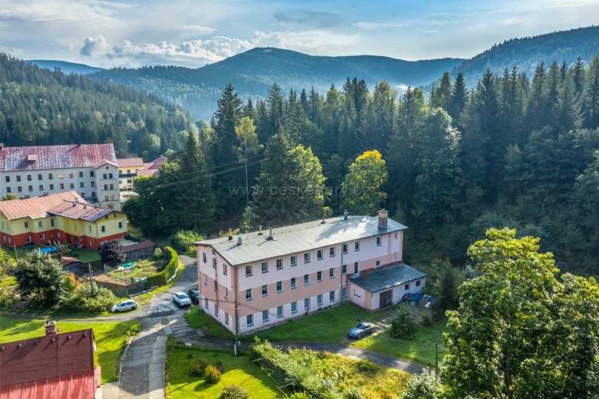

Kořenov · Góry Izerskie
Spokojny nocleg w Górach Izerskich
Przytulny apartament 1+1 na parterze domu w Kořenovie. Trasy biegowe są niecały kilometr stąd, ścieżka rowerowa 100 metrów od domu.
- 32 m²1+1, parter
- do 4osób
- Bezpłatnyparking przy domu
- Wi-Fii TV
- Po uzgodnieniuzwierzęta domowe
O apartamencie
Baza na wypoczynek w górach i na rowerze
Apartament Mili znajduje się na parterze domu Beruška w Kořenovie. Tworzą go pokój dzienny z miejscami do spania, kuchnia ze stołem jadalnym, łazienka z kabiną prysznicową i WC oraz przedpokój.
Sprawdzi się dla par i rodzin z dziećmi. Mile widziani są rowerzyści, narciarze i piesi turyści. Przed domem jest bezpłatny parking, a palenisko i suszarka do butów przydadzą się po powrocie z trasy.
Miejsca do spania
- 1× łóżko małżeńskie
- 1× łóżko pojedyncze
- 1× rozkładana sofa
- 1× dostawka
Apartament jest przeznaczony dla 4 osób. Pościel jest dostępna na miejscu.
Układ
- Przedpokój
- Pokój dzienny z miejscami do spania
- Kuchnia ze stołem jadalnym
- Łazienka z kabiną prysznicową i WC
Galeria
Zajrzyj do środka
Kliknij zdjęcie, aby je powiększyć.
Wyposażenie
Co znajdziesz na miejscu
Kuchnia
- Kuchenka z piekarnikiem
- Kuchenka mikrofalowa
- Zmywarka
- Lodówka
- Czajnik elektryczny
- Pełne wyposażenie w naczynia
Łazienka
- Kabina prysznicowa i WC
- Suszarka do włosów
- Ręczniki
Dom i okolica
- Wi-Fi i TV
- Pościel
- Suszarka do butów
- Bezpłatny parking przy domu
- Palenisko
- Zwierzęta domowe po uzgodnieniu
Lokalizacja
Wszystko ważne w pobliżu
Kořenov leży w Górach Izerskich, niedaleko Harrachova. Odległości są orientacyjne.

Od apartamentu
- Ścieżka rowerowa
- 100 m
- Trasy biegowe
- 1 km
- Wyciągi narciarskie
- 1,4 km
- Sklep COOP
- 900 m
- Najbliższa restauracja
- 900 m
- Przystanek autobusowy
- 300 m
- Stacja kolejowa Kořenov
- 2 km
Wycieczki w okolicy
- Harrachov
- 5 km
- Jizerka
- 6 km
- Ośrodek narciarski Rejdice
- 7 km
- Ośrodek narciarski Rokytnice nad Jizerou
- 11 km
Dojazd
- SamochodemDrogą nr 10 w kierunku Harrachova, następnie 300 m utrzymaną drogą do domu. Parking jest bezpośrednio przed domem.
- AutobusemBezpośredni autobus z Pragi (Černý Most) zatrzymuje się 300 m od domu.
- PociągiemStacja kolejowa Kořenov jest 2 km od apartamentu.
Pory roku
Zima
Trasy biegowe są około kilometra od domu, wyciągi narciarskie 1,4 km. Większe ośrodki znajdziesz w Rejdicach i w Rokytnicach nad Jizerou.
Lato
Ścieżka rowerowa biegnie 100 metrów od domu. Rowerem lub pieszo dotrzesz do Harrachova i na Jizerkę.
Rezerwacja
Wybierz termin
Wolne terminy, ceny i rezerwację znajdziesz w naszym systemie rezerwacji.
Link do systemu rezerwacji zostanie uzupełniony.
Kontakt
Masz pytanie?
Chętnie doradzimy w sprawie terminu, dojazdu lub pobytu z psem.
- Adres
- Kořenov 659, Kořenov
- GPS
- 50.761286 N, 15.384355 E
Mapa
Nie ładujemy mapy z zewnętrznych serwerów, otworzy się dopiero po kliknięciu.